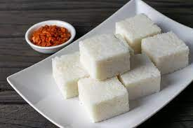

Milk Rice

Description
Kiribath aka Sri Lankan milk rice is Sri Lanka's national dish that we make for every celebration in Sri Lanka. And a classic breakfast that everyone loves. Here's my fool-proof easy recipe to make creamy delicious Kiribath/milk rice.
Ingredients
- 2 cups "Kekulu" Rice (Substitute : Basmati, Jasmine)
- 3 3/4 cups Water
- 400 milliliters Thick coconut milk ( 400ml = 1 2/3 cups = 1 can)
- 2 teaspoons Salt
Steps
- Wash your rice first, then drain water and put it into the rice cooker or instant pot (which is what I use here) or any pot you cook your rice usually.
- Add water and 1 tsp salt (keep rest of the salt for after). Cook your rice using your usual method. If you're using a rice cooker, turn on the cook switch. If you're using an instant pot, press the rice preset. All you do here is cook rice the normal way but with just a little bit of water than you’d normally use.
- Get your thick coconut milk (I use one 400ml can for 2 cups of rice) and the rest of the salt to it and dissolve well. Taste it and it should taste a little salty. If you have tasted Kiribath before your coconut milk should have a similar taste to Kiribath now. Adjust salt to your liking.
- Add the coconut milk to the cooked rice as soon as the rice is done cooking. Do NOT wait until the rice cools down.
- Mix your rice and coconut milk very well using a spoon until the rice grains breakdown and everything sticks together. You can transfer the rice to a banana leaf or a tray at this point and shape it. But if you still get the raw coconut milk smell, turn on the heat back again and cook for about 2- 3 more minutes on the stove or in the rice cooker. If you’re using an instant pot, press the “Keep warm” option and leave it covered for about 5 - 8 mins
Shaping and cutting Kiribath
- Transfer the rice to a cleaned banana leaf. Make sure to do it while Kiribath/milkrice is still hot. It starts to become hardened as it cools down. Which makes it harder to shape and cut into squares
- Shape the Kiribath using another piece of banana leaf/ a baking paper/ spatula into a flat round or a square or to any other shape of your liking. Press the rice firmly so the broken rice sticks to each other.
-
Get a knife and wrap the knife with a plastic wrap. And apply a little bit of coconut milk/milk or water so the knife doesn’t stick to the rice
-
Cut your shaped Kiribath into squares or diamond shapes. Let it cool down a little bit. It’s easier to separate squares when Kiribath has cooled down.